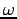

Almost all problems in PWscf arise from incorrect input data and result in error stops. Error messages should be self-explanatory, but unfortunately this is not always true. If the code issues a warning messages and continues, pay attention to it but do not assume that something is necessarily wrong in your calculation: most warning messages signal harmless problems.
Typical pw.x and/or ph.x (mis-)behavior:
Possible reasons:
If you get error messages in the example scripts - i.e. not errors in the codes - on a parallel machine, such as e.g. : ``run_example: -n: command not found'' you have forgotten the `''` in the definitions of PARA_PREFIX and PARA_POSTFIX.
If the code looks like it is not reading from input, maybe it isn't: the MPI libraries need to be properly configured to accept input redirection. See section ``Running on parallel machines'', or inquire with your local computer wizard (if any).
There is an error in the input data. Usually it is a misspelled namelist variable, or an empty input file. Note that out-of-bound indices in dimensioned variables read in the namelist may cause the code to crash with really mysterious error messages. Also note that input data files containing ^M (Control-M) characters at the end of lines (typically, files coming from Windows PC) may yield error in reading. If none of the above applies and the code stops at the first namelist (``control'') and you are running in parallel: your MPI libraries might not be properly configured to allow input redirection, so that what you are effectively reading is an empty file. See section ``Running on parallel machines'', or inquire with your local computer wizard (if any).
You are trying to restart from a previous job that either produced corrupted files, or did not do what you think it did. No luck: you have to restart from scratch.
As a rule, the flavor of DFT used in the calculation should be the same as the one used in the generation of PP's, and all PP's should be generated using the same flavor of DFT. This is actually enforced: the type of DFT is read from PP files and it is checked that the same DFT is read from all PP's. If this does not hold, the code stops with the above error message.
If you really want to use PP's generated with different DFT, or to perform a calculation with a DFT that differs from what used in PP generation, change the appropriate field in the PP file(s), at your own risk.
Possible reasons for such behavior are not always clear, but they typically fall into one of the following cases:
If this happens on HP-Compaq True64 Alpha machines with an old version of the compiler: the compiler is most likely buggy. Otherwise, move to next item.
This happens quite often in parallel execution, or under a batch queue, or if you are writing the output to a file. When the program crashes, part of the output, including the error message, may be lost, or hidden into error files where nobody looks into. It is the fault of the operating system, not of the code. Try to run interactively and to write to the screen. If this doesn't help, move to next point.
Possible reasons:
Possible solutions:
See info from Axel Kohlmeyer:
http://www.democritos.it/pipermail/pw_forum/2005-April/002338.html
Random crashes due to MPI errors have often been reported in Linux PC clusters. We cannot rule out the possibility that bugs in Quantum-ESPRESSO cause such behavior, but we are quite confident that the likely explanation is a hardware problem (defective RAM for instance) or a software bug (in MPI libraries, compiler, operating system).
Possible reasons:
Possible solutions:
You did not specify state occupations, but you need to, since your system appears to have an odd number of electrons. The variable controlling how metallicity is treated is occupations in namelist &SYSTEM. The default, occupations='fixed', occupies the lowest nelec/2 states and works only for insulators with a gap. In all other cases, use 'smearing' or 'tetrahedra'. See file INPUT_PW for more details.
Possible reasons:
There is either a serious error in data (bad number of electrons, insufficient number of bands), or too few tetrahedra (i.e. k-points). The tetrahedron method may become unstable in the latter case, especially if the bands are very narrow. Remember that tetrahedra should be used only in conjunction with uniform k-point grids.
This may happen under special circumstances when you are calculating the band structure for selected high-symmetry lines. The message signals that occupations and Fermi energy are not correct (but eigenvalues and eigenvectors are). Remove occupations='tetrahedra' in the input data to get rid of the message.
Your system does not require that many processors: reduce the number
of processors to a more sensible value.
In particular, both N3
Yes, they are!
The code automatically chooses the smallest grid that is compatible
with the specified cutoff in the specified cell, and is an
allowed value for the FFT library used.
Most FFT libraries are implemented, or perform well, only with
dimensions that factors into products of small numers (2, 3, 5
typically, sometimes 7 and 11).
Different FFT libraries follow different rules and thus different
dimensions can result for the same system on different machines (or
even on the same machine, with a different FFT).
See function allowed in Modules/fft_scalar.f90.
As a consequence, the energy may be slightly different on different
machines.
The only piece that depends explicitely on the grid parameters is the
XC part of the energy that is computed numerically on the grid.
The differences should be small, though, expecially for LDA
calculations.
Manually setting the FFT grids to a desired value is possible, but
slightly tricky, using input variables nr1, nr2, nr3 and
nr1s, nr2s, nr3s.
The code will still increase them if not acceptable.
Automatic FFT grid dimensions are slightly overestimated, so one may
try -- very carefully -- to reduce them a little bit.
The code will stop if too small values are required, it will waste CPU
time and memory for too large values.
Note that in parallel execution, it is very convenient to have FFT
grid dimensions along z
This is not an error.
pw.x determines first the symmetry operations (rotations)
of the Bravais lattice; then checks which of these are symmetry
operations of the system (including if needed fractional
translations).
This is done by rotating (and translating if needed) the atoms in
the unit cell and verifying if the rotated unit cell coincides
with the original one.
If a symmetry operation contains a
fractional translation that is incompatible with the FFT grid,
it is discarded in order to prevent problems with symmetrization.
Typical fractional translations are 1/2 or 1/3 of a lattice
vector. If the FFT grid dimension along that direction is not
divisible respectively by 2 or by 3, the symmetry operation will
not transform the FFT grid into itself.
See above to learn how PWscf finds symmetry operations.
Some of them might be missing because:
If the difference is small, do not panic. It is quite normal for iterative
methods to reach convergence through different paths as soon as anything
changes. In particular, between serial and parallel execution there are
operations that are not performed in the same order. As the numerical
accuracy of computer numbers is finite, this can yield slightly different
results.
It is also normal that the total energy converges to a better accuracy
than the parts it is composed of. Thus if the convergence threshold is
for instance 10-8
Yes it is!
On most machines and on most operating systems, depending on machine
load, on communication load (for parallel machines), on various other
factors (including maybe the phase of the moon), reported CPU times
may vary quite a lot for the same job.
Also note that what is printed is supposed to be the CPU time per
process, but with some compilers it is actually the wall time.
This is a warning message that can be safely ignored if it
is not present in the last steps of self-consistency. If it
is still present in the last steps of self-consistency, and
if the number of unconverged eigenvector is a significant
part of the total, it may signal serious trouble in self-consistency
(see next point) or something badly wrong in input data.
These are warning messages that can be safely ignored unless the
negative or imaginary charge is sizable,
let us say O(0.1). If it is, something seriously
wrong is going on. Otherwise, the origin of the negative
charge is the following. When one transforms a positive
function in real space to Fourier space and truncates at
some finite cutoff, the positive function is no longer
guaranteed to be positive when transformed back to real
space. This happens only with core corrections and with
ultrasoft pseudopotentials. In some cases it may be a
source of trouble (see next point) but it is usually
solved by increasing the cutoff for the charge density.
Reduce mixing_beta from the default value (0.7) to
If the above doesn't help: verify if your system is metallic or is
close to a metallic state, especially if you have few k-points.
If the highest occupied and lowest unoccupied state(s) keep exchanging
place during self-consistency, forget about reaching convergence. A
typical sign of such behavior is that the self-consistency error
goes down, down, down, than all of a sudden up again, and so on.
Usually one can solve the problem by adding a few empty bands and a
broadening.
Specific to US PP: the presence of negative charge density regions due
to either the pseudization procedure of the augmentation part or to
truncation at finite cutoff may give convergence problems.
Raising the ecutrho cutoff for charge density will usually
help, especially in gradient-corrected calculations.
Typical structural optimizations, based on the BFGS algorithm, converge to
the default thresholds ( etot_conv_thr and
forc_conv_thr ) in 15-25 BFGS steps (depending on the starting
configuration). This may not happen when your system is characterized by
``floppy'' low-energy modes, that make very difficult -- and of little use
anyway -- to reach a well converged structure, no matter what. Other
possible reasons for a problematic convergence are listed below.
Close to convergence the self-consistency error in forces may become
large with respect to the value of forces. The resulting mismatch
between forces and energies may confuse the line minimization
algorithm, which assumes consistency between the two. The code
reduces the starting self-consistency threshold
conv_thr when approaching the minimum energy configuration,
up to a factor defined by upscale. Reducing
conv_thr (or increasing upscale) yields a smoother
structural optimization, but if conv_thr becomes too small,
electronic self-consistency may not converge. You may also increase
variables etot_conv_thr and
forc_conv_thr that determine the threshold for convergence
(the default values are quite strict).
A limitation to the accuracy of forces comes from the absence of
perfect translational invariance. If we had only the Hartree
potential, our PW calculation would be translationally invariant to
machine precision. The presence of an exchange-correlation potential
introduces Fourier components in the potential that are not in our
basis set. This loss of precision (more serious for
gradient-corrected functionals) translates into a slight but
detectable loss of translational invariance (the energy changes if all
atoms are displaced by the same quantity, not commensurate with the
FFT grid). This sets a limit to the accuracy of forces. The
situation improves somewhat by increasing the ecutrho cutoff.
Variable-cell optimization may occasionally break the starting
symmetry of the cell. When this happens, the run is stopped
because the number of k-points calculated for the starting
configuration may no longer be suitable. Possible solutions:
For Linux PC clusters in parallel execution: in at least some
versions of MPICH, the current directory is set to the directory where
the executable code resides, instead of being set to the
directory where the code is executed.
This MPICH weirdness may cause unexpected failures in some
postprocessing codes that expect a data file in the current directory.
Workaround: use symbolic links, or copy the executable to the current
directory.
The data file produced by pw.x is bad or incomplete or
produced by an incompatible version of the code.
In parallel execution: if you did not set wf_collect=.true.,
the number of processors and pools for the phonon run should be the
same as for the self-consistent run; all files must be visible to all
processors.
You have a bad restart file from a preceding failed execution.
Remove all files recover* in outdir.
You have a metallic or spin-polarized system but occupations are not
set to ``smearing''. Note that the correct way to calculate occupancies
must be specified in the input data of the non-selfconsistent
calculation, if the phonon code reads data from it. The non-selfconsistent
calculation will not use this information but the phonon code will.
This may not be an error: the Acoustic Sum Rule (ASR) is never exactly
verified, because the system is never exactly translationally
invariant as it should be (see the discussion above).
The calculated frequency of the acoustic mode is typically less than
10 cm-1
Possible reasons:
Verify the q-point for which you are calculating phonons.
In order to check whether a symmetry operation belongs to the small
group of q, the code compares q and the rotated
q, with an acceptance tolerance of 10-5
8.0.0.20 the FFT grids in pw.x are machine-dependent.
8.0.0.21 ``warning: symmetry operation # N not allowed''.
8.0.0.22 pw.x doesn't find all the symmetries you
expected.
8.0.0.23 I don't get the same results in different machines!
8.0.0.24 the CPU time is time-dependent!
8.0.0.25 ``warning : N eigenvectors not converged ...''
8.0.0.26 ``warning : negative or imaginary charge...'', or
``...core charge ...'', or ``npt with rhoup<
8.0.0.27 self-consistency is slow or does not converge.
 0.3 - 0.1
0.3 - 0.1
8.0.0.28 structural optimization is slow or does not converge.
8.0.0.29 pw.x stops during variable-cell optimization
in checkallsym with ``non orthogonal operation'' error.
(cell_dynamics='damp-w') shouldn't break the symmetry.
8.0.0.30 Why are codes in PP/ complaining that they do not
find some files?
8.0.0.31 ph.x stops with ``error reading file''.
8.0.0.32 ph.x mumbles something like ``cannot recover'' or
``error reading recover file''.
8.0.0.33 ph.x says ``occupation numbers probably wrong''
and continues; or ``phonon + tetrahedra not implemented'' and stops
8.0.0.34 ph.x does not yield acoustic modes with  = 0
8.0.0.35 ph.x yields really lousy phonons, with bad or
negative frequencies or wrong symmetries or gross ASR
violations.
8.0.0.36 ``Wrong degeneracy'' error in star_q.
Subsections


Next: 9 Frequently Asked Questions
Up: User's Guide for Quantum-ESPRESSO
Previous: 7.4 Parallelization issues
Contents
Paolo Giannozzi
2008-05-14